import numpy as np
import matplotlib.pyplot as plt
1. 강의영상
2. Imports
3. 2024 수능 – 16,11,8,26,19,12

#대략적인 값 확인 x=np.linspace(-5,5,101)
#x x=np.linspace(1,3,101) #처음 (-5,5,101) 임의로 출력해본 후 x, y 값을 조정해가며 만나는 점을 확인)
lhs = 3**(x-8)
rhs = (1/27)**x
plt.plot(x,lhs,label=r"$3^{x-8}$")
plt.plot(x,rhs,label=r"$(\frac{1}{27})^x$")
plt.legend()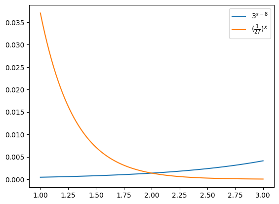
#x=2라고 예상되는데, 한번 대입해보자.
3**(2-8), (1/27)**2(0.0013717421124828531, 0.0013717421124828531)#다른방식(유추 말고 직접 값을 구하기)
x = np.linspace(1,3,101)
lhs = 3**(x-8)
rhs = (1/27)**x
#np.abs(lhs-rhs)
#np.argmin(np.abs(lhs-rhs)) *argument of minimum: 최솟값의 인덱스
x[np.argmin(np.abs(lhs-rhs))] #그때의 x 값 구하기np.float64(2.0)
|a6| = a8 은 a6 = a8, a6 = -a8 을 의미. 그런데, 공차가 0이 아니므로 a6 = a8는 불가능 또한 a6 = -a8 라면 a7 = 0이 성립
#수열을 만들 때, 아래와 같이 할 수 있지만 np.linspace 이용 가능
#n = np.array({1,2,3,4,5,6,7,8,9,10,11,12,13,14,15})
#nn = np.linspace(1,15,15)
#가령, 2*n-1 라고 하면 첫째항이 1이고, 공차가 2인 수열 만들어짐
d = 4
#d*n-d*7 7번째항이 0이 되도록
np.stack([n,d*n-d*7],axis=1) #몇째항의 값이 무엇인지 알아보기 쉽게 정리array([[ 1., -24.],
[ 2., -20.],
[ 3., -16.],
[ 4., -12.],
[ 5., -8.],
[ 6., -4.],
[ 7., 0.],
[ 8., 4.],
[ 9., 8.],
[ 10., 12.],
[ 11., 16.],
[ 12., 20.],
[ 13., 24.],
[ 14., 28.],
[ 15., 32.]])(풀이1)
n = np.linspace(1,15,15)
d = 4
an = d*n-d*7
anarray([-24., -20., -16., -12., -8., -4., 0., 4., 8., 12., 16.,
20., 24., 28., 32.])좀 더 보기 편하게 하기 위해서..
np.stack([n,an],axis=1)array([[ 1., -24.],
[ 2., -20.],
[ 3., -16.],
[ 4., -12.],
[ 5., -8.],
[ 6., -4.],
[ 7., 0.],
[ 8., 4.],
[ 9., 8.],
[ 10., 12.],
[ 11., 16.],
[ 12., 20.],
[ 13., 24.],
[ 14., 28.],
[ 15., 32.]])\(d\)에 따라 바뀌는 \(\sum_{k=1}^{5}\frac{1}{a_k a_{k+1}}\) 값을 조사하고 이 값이 \(\frac{5}{96}\)이 되는 \(d\)를 찾아보자.
n = np.linspace(1,15,15)
d = 4
an = d*n-d*7
np.sum(1/(an[:5]*an[1:6])), 5/96 #d값을 변화시켜가며, 같아지는 값을 확인하기(np.float64(0.052083333333333336), 0.052083333333333336)찾아보니까 \(d=4\)이다.
np.sum(an)np.float64(60.0)
Note
np.stack()을 이용하는 부분은 너무 내용이 많아 이후에 다시 설명할 예정입니다. 이런것이 가능하다 정도만 알아두시고 이번퀴즈에서 공부하실때는 제외하세요.
(풀이2)
n = np.linspace(1,15,15)
d = 4
an = d*n-d*7
print(f'{np.sum(1/(an[:5]*an[1:6]))-5/96} --> 이 값이 0이 되도록 해야함')0.0 --> 이 값이 0이 되도록 해야함구조를 살펴보니까
\[d \to np.sum(1/(an[:5]*an[1:6]))-5/96\]
와 같은 역할을 하는 함수 \(dff(d)\)를 선언하고 \(dff(d)\)가 0이 되는 \(d\)의 값을 찾으면 된다.
def dff(d):
an = d*n-d*7
return np.sum(1/(an[:5]*an[1:6]))-5/96d = np.linspace(3,5,101)
#dff(0) 이런건 괜찮은데, dff([0.4, 0.5]) 이런식으로의 값을 원하지만, d와 n의 차원(?)이 달라서 이렇게는 나타낼 수 없음
plt.plot(list(map(dff,d)))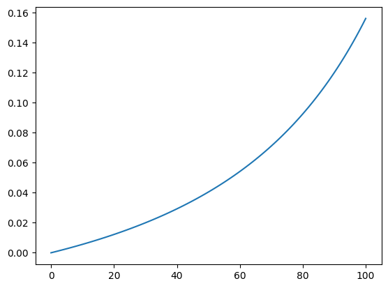
조금 이해가 안되었는데 넘어감 복습/정리 시점에 다시 확인할 것. - 11개 중 2번째 강의
dff_vector = list(map(dff,d))
d[np.argmin(np.abs(dff_vector))]np.float64(4.0)따라서 \(d=4\)에서 \(dff(d)=\sum_{k=1}^{5}\frac{1}{a_k a_{k+1}}-\frac{5}{96}=0\)이 만족한다. 따라서 답은
n = np.linspace(1,15,15)
d = 4
an = d*n-d*7
np.sum(an)np.float64(60.0)
(풀이1)
f = lambda x: (3*x**4 -3*x)/(x-1)
x = np.linspace(-2,2,100)
plt.plot(x,f(x),'--')np.mean(f(x)) *4np.float64(16.032032032032035)(풀이2)
f = lambda x: (3*x**4 -3*x)/(x-1)
x = np.linspace(-2,2,1000)
plt.plot(x,f(x),'--')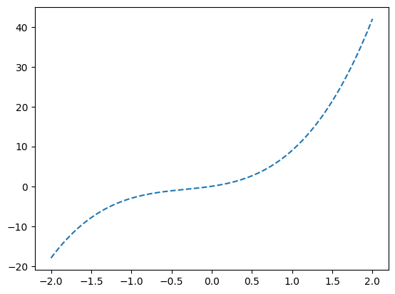
직관적으로 생각해봤을 때,
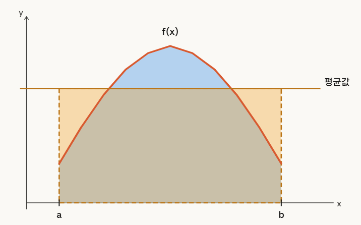
x_rand = np.random.rand(1000000)*4 - 2 ## -2~2 까지 임의의수가 골고루 퍼져있음.
np.mean(f(x_rand)) * 4np.float64(16.033006347852663)(풀이3)
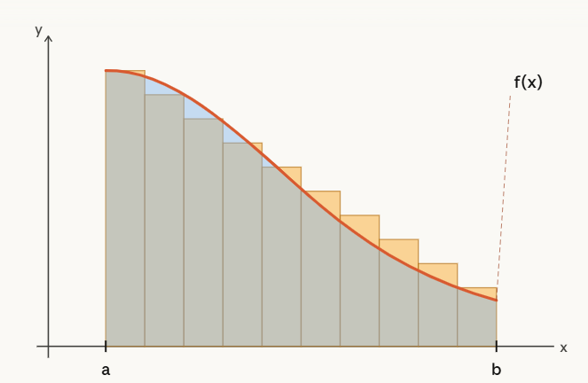
f = lambda x: (3*x**4 -3*x)/(x-1)
x = np.linspace(-2,2,1000)delta = x[1]-x[0]
f_arr = f(x)
F_arr = np.cumsum(f_arr) * deltaplt.plot(x,f_arr,label=r'$f(x)$')
plt.plot(x,F_arr,label=r'$\int_{-2}^{x}f(x)dx$')
plt.legend()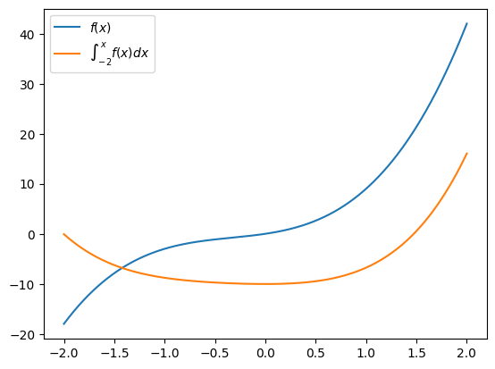
F_arr[-1]np.float64(16.048080112143815)
(풀이)
x = np.linspace(3/4*np.pi, 5/4*np.pi, 101)
y = np.sqrt((1-2*x)*np.cos(x))plt.plot(x,y)
np.mean(y**2) * 2/4*np.pi #정사각형의 넒이 * (5/4*np.pi-3/4*np.pi)np.float64(7.4555248716100895)np.sqrt(2)*np.pi-np.sqrt(2), np.sqrt(2)*np.pi-1, 2*np.sqrt(2)*np.pi-np.sqrt(2), 2*np.sqrt(2)*np.pi-1, 2*np.sqrt(2)*np.pi(np.float64(3.028669375785271),
np.float64(3.442882938158366),
np.float64(7.471552313943637),
np.float64(7.885765876316732),
np.float64(8.885765876316732))
(풀이)
x = np.linspace(1,15,15)
f = lambda x: np.sin(np.pi/4*x)
bool_array = f(2+x)*f(2-x) < 1/4
bool_arrayarray([False, True, False, False, False, True, False, False, False,
True, False, False, False, True, False])x[bool_array] # bool_array에서 True에 해당하는 원소들만 출력됨.array([ 2., 6., 10., 14.])np.sum(x[bool_array])np.float64(32.0)
(풀이)
f = lambda x: 1/9*x*(x-6)*(x-9)
# note: 함수g는 t에 따라서 달라짐. t->g(x) 를 구현해주는 함수 make_gfunction 을 만들자.
def make_gfunction(t):
def g(x):
if x<t:
return f(x)
else:
return -(x-t)+f(t)
return gx = np.linspace(0,10,1001)
t = 3.2
g = make_gfunction(t)
fx = list(map(f,x))
gx = list(map(g,x))
plt.plot(x,fx,label=r'$f(x)$',alpha=0.5)
plt.plot(x,gx,label=r'$g(x)$')
plt.title(f"t={t}")
plt.vlines(t,ymin=-2,ymax=7,color='lime',linestyles='dashed')
plt.legend()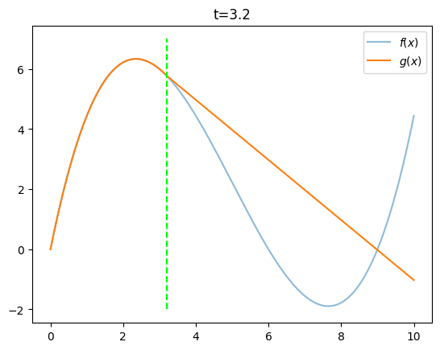
#t -> 주황색곡선의 면적이 계산되는 함수
def cal_area(t):
#t = 3.2
g = make_gfunction(t)
fx = list(map(f,x))
gx = list(map(g,x))
Gx = np.cumsum(gx)*0.01
S = np.max(Gx)
return St = np.linspace(0,6,101)[1:-1]
St = list(map(cal_area,t))
plt.plot(t,St,label=r"$S(t)$")
plt.title(f'area = {np.max(St):.4f}')
plt.legend()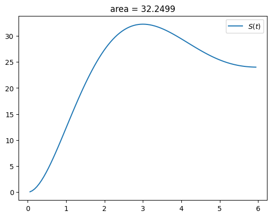
125/4, 127/4, 129/4, 131/4, 133/4(31.25, 31.75, 32.25, 32.75, 33.25)4. 자료형과 형변환 – 파이썬 문법
- 파이썬의 기본자료형은 int, float, bool, str, list, tuple, dict, set 등이 있다.
- 0차원 자료형: int, float, bool
- 1차원 자료형: str, list, tuple, dict, set
A. int, float, bool
- int형
a=100type(a)int- float형
a=1.2*3
a3.5999999999999996type(a)floata?- bool형
a=True ## 숫자1으로 생각할 수 있음
b=False ## 숫자0으로 생각할 수 있음type(a)booltype(b)boola?b?- bool형의 연산
a=True ## 1
b=False ## 0a+b1a*b0- 형태변환: float \(\to\) int
(예시1)
a=3.0
type(a)floata=int(a)type(a)int(예시2) 이경우는 정보의 손실이 발생
a=3.14
int(a)3- 형태변환: int \(\to\) float
a=3
type(a)inta=float(a)
type(a)float- 형태변환: bool \(\to\) int/float, int/float \(\to\) bool
(예시1)
a=True
type(a)boolint(a)1float(a)1.0(예시2)
a=1
bool(a)Truea=0
bool(a)False(예시3)
a=1.0
bool(a)Truea=0.0
bool(a)FalseB. 1차원 자료의 형태변환
- list \(\to\) np.array
[1,2,3][1, 2, 3]np.array([1,2,3])array([1, 2, 3])- np.array \(\to\) list
np.linspace(1,10,10)array([ 1., 2., 3., 4., 5., 6., 7., 8., 9., 10.])list(np.linspace(1,10,10))[np.float64(1.0),
np.float64(2.0),
np.float64(3.0),
np.float64(4.0),
np.float64(5.0),
np.float64(6.0),
np.float64(7.0),
np.float64(8.0),
np.float64(9.0),
np.float64(10.0)]- range \(\to\) list, np.array
range(10) # 이게 뭐야??range(0, 10)list(range(10)) # 리스트화[0, 1, 2, 3, 4, 5, 6, 7, 8, 9]np.array(range(10)) # 넘파이배열화array([0, 1, 2, 3, 4, 5, 6, 7, 8, 9])보충학습: range의 다양한 활용을 익혀보자.
list(range(10))[0, 1, 2, 3, 4, 5, 6, 7, 8, 9]list(range(0,10))[0, 1, 2, 3, 4, 5, 6, 7, 8, 9]list(range(3,10))[3, 4, 5, 6, 7, 8, 9]list(range(3,10,2))[3, 5, 7, 9]- map 결과물 \(\to\) list
f = lambda x: x**2
list(map(f,[1,2,3])) # [f(1),f(2),f(3)][1, 4, 9]- map 결과물 \(\to\) np.array로는 불가능
f = lambda x: x**2
np.array(map(f,[1,2,3]))array(<map object at 0x7fd5c3b82ef0>, dtype=object)# 아래는 가능
f = lambda x: x**2
np.array(list(map(f,[1,2,3])))array([1, 4, 9])5. 등차수열을 선언하는 다양한 방법 – 파이썬 문법
아래와 같은 등차수열을 만드는 방법을 살펴보자.
\[1,4,7,\dots,31 \]
np.linspace(1,31,11)array([ 1., 4., 7., 10., 13., 16., 19., 22., 25., 28., 31.])list(range(1,32,3))[1, 4, 7, 10, 13, 16, 19, 22, 25, 28, 31]np.array(range(1,32,3))array([ 1, 4, 7, 10, 13, 16, 19, 22, 25, 28, 31])np.arange(1,32,3)array([ 1, 4, 7, 10, 13, 16, 19, 22, 25, 28, 31])# len(np.arange(1,32,3)) # 원소의 수는 11
n = np.arange(1,12)
3*n-2array([ 1, 4, 7, 10, 13, 16, 19, 22, 25, 28, 31])a = lambda n: 3*n-2
a(1),a(2),a(3),a(4),a(5),a(6),a(7),a(8),a(9),a(10),a(11)(1, 4, 7, 10, 13, 16, 19, 22, 25, 28, 31)n = np.arange(1,12)
a = lambda n: 3*n-2
a(n)array([ 1, 4, 7, 10, 13, 16, 19, 22, 25, 28, 31])n = np.arange(1,12)
a = lambda n: 3*n-2
list(map(a,n))[np.int64(1),
np.int64(4),
np.int64(7),
np.int64(10),
np.int64(13),
np.int64(16),
np.int64(19),
np.int64(22),
np.int64(25),
np.int64(28),
np.int64(31)]n = np.arange(32)
n[1::3]array([ 1, 4, 7, 10, 13, 16, 19, 22, 25, 28, 31])6. \(\text{map}(f,{\bf x})\) – 파이썬 문법
- 브로드캐스팅은 매우 편리한 기능임
f = lambda x: x+1arr = np.array([1,2,3])
f(arr)array([2, 3, 4])- 불가능한 경우도 있음 (1)
f = lambda x: np.max(x) - np.min(x)x1 = [1,2,3]
x2 = [2,3]
x3 = [3,3,4,5,5,6]
f(x1),f(x2),f(x3)(np.int64(2), np.int64(1), np.int64(3))list(map(f,[x1,x2,x3]))[np.int64(2), np.int64(1), np.int64(3)]- 불가능한 경우도 있었음 (2)
def dff(d):
n = np.linspace(1,15,15)
an = d*n-d*7
return np.sum(1/(an[:5]*an[1:6]))-5/96d = 1
dff(d)np.float64(0.78125)이게 되는이유?
d = 1
n = np.linspace(1,15,15)
an = d*n-d*7
np.sum(1/(an[:5]*an[1:6]))-5/96np.float64(0.78125)d = np.array([1,2,3])
dff(d)--------------------------------------------------------------------------- ValueError Traceback (most recent call last) Cell In[91], line 2 1 d = np.array([1,2,3]) ----> 2 dff(d) Cell In[88], line 3, in dff(d) 1 def dff(d): 2 n = np.linspace(1,15,15) ----> 3 an = d*n-d*7 4 return np.sum(1/(an[:5]*an[1:6]))-5/96 ValueError: operands could not be broadcast together with shapes (3,) (15,)
이게 안되는 이유?
d = np.array([1,2,3])
n = np.linspace(1,15,15)
an = d*n-d*7
np.sum(1/(an[:5]*an[1:6]))-5/96--------------------------------------------------------------------------- ValueError Traceback (most recent call last) Cell In[409], line 3 1 d = np.array([1,2,3]) 2 n = np.linspace(1,15,15) ----> 3 an = d*n-d*7 4 np.sum(1/(an[:5]*an[1:6]))-5/96 ValueError: operands could not be broadcast together with shapes (3,) (15,)
- 그동안 가능했던 이유
def f(x):
return x+1x=5
x+16x=np.array([5,6])
x+1array([6, 7])요약: 어떠한 함수가 원소별로 각각 적용은 가능하지만 한번에 적용 (브로드캐스팅) 은 불가능할때 map은 매우 강력한 도구이다.
7. Bool을 이용한 인덱싱 – 파이썬 문법
- 기본개념
arr = np.array([1,-2,3,44])
arr[[True,False,True,True]]array([ 1, 3, 44])- 응용 1 – 양수만 출력
arr = np.array([1,-2,3,44])
arr[arr>0]array([ 1, 3, 44])- 응용 2 – 짝수만 출력
arr = np.array([1,-2,3,44])
arr[arr % 2 == 0]array([-2, 44])보충학습: 아래의 테크닉도 알아둘것
- 예시1 – 양수를 카운트
arr = np.array([1,-2,3,44])
sum(arr>0)3- 예시2 – 짝수를 카운트
arr = np.array([1,-2,3,44])
sum(arr % 2 == 0)28. if문 – 파이썬 문법
- 예시1
def f(x):
if x>0:
return x
else:
return -xx = np.linspace(-10,10,101)
fx = np.array(list(map(f,x)))
plt.plot(x,fx)
- 예시2
def f(x):
return x if x>0 else -xx = np.linspace(-10,10,101)
fx = np.array(list(map(f,x)))
plt.plot(x,fx)
- 예시3
f = lambda x: x if x>0 else -xx = np.linspace(-10,10,101)
fx = np.array(list(map(f,x)))
plt.plot(x,fx)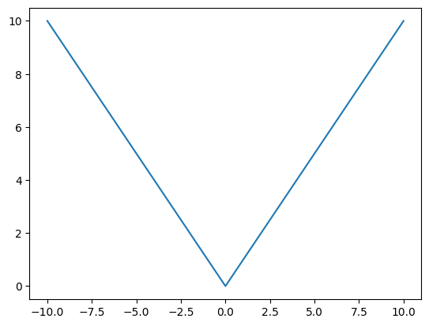
9. np.random 모듈 – 파이썬 문법
A. np.random.rand()
- 0~1 사이에서 10개의 난수생성
np.random.rand(10)array([0.43345371, 0.48324862, 0.48046707, 0.41056049, 0.56188841,
0.58762904, 0.6645858 , 0.60568829, 0.83033841, 0.4660302 ])- 0~2 사이에서 10개의 난수생성
np.random.rand(10)*2array([0.44894259, 1.8416822 , 0.50164259, 1.01601855, 0.21073439,
1.8049244 , 0.86548008, 0.38544391, 0.13816874, 1.22858088])- 1~3 사이에서 10개의 난수생성
np.random.rand(10)*2 + 1array([1.58013021, 1.96358901, 2.62137695, 1.74617053, 2.38021729,
1.00043864, 1.42801985, 1.65666288, 2.80405753, 1.23691426])B. np.random.randn()
- N(0,1)에서 10개의 난수생성
np.random.randn(10) # 표준정규분포에서 10개의 샘플 추출array([-0.88043002, -0.75000612, -0.46393189, 0.73721724, -0.66208613,
0.84740615, -0.31835775, 0.60157946, 0.62744116, 2.06223706])- N(1,1)에서 10개 난수생성
np.random.randn(10) + 1array([ 1.50801901, 0.06945884, 2.52305677, 0.25080242, -0.25058225,
1.81696343, -0.47341629, 0.51879014, 2.55038708, 0.58788704])- N(0,4) 에서 10개 난수생성
np.random.randn(10)*2array([-2.26593271, -1.62304968, -1.71372316, 2.93723947, 0.63497107,
2.96605112, 0.71536533, 2.64037886, 0.10782247, -2.97822434])- N(3,4) 에서 10개 난수생성
np.random.randn(10)*2+3array([ 3.71923104, 1.77496469, 4.04116354, 4.27443252, 2.59130929,
5.48551961, -1.09164073, 3.08090641, 0.88721243, 3.34579357])C. np.random.randint()
- [0,7) 에서 10개의 정수생성
np.random.randint(0,7,size=10) # [0,7)의 범위에서 10개의 정수 생성array([0, 1, 5, 0, 2, 3, 1, 3, 0, 5])- [10,20) 에서 10개의 정수생성
np.random.randint(10,20,size=10) # [0,7)의 범위에서 10개의 정수 생성array([11, 10, 10, 19, 13, 11, 11, 11, 15, 19])D. np.random.choice()
- [11,22,33] 에서 중복허용하여 20개 추출
np.random.choice([11,22,33],20)array([33, 33, 11, 33, 11, 11, 33, 22, 11, 33, 33, 33, 22, 33, 11, 11, 22,
22, 33, 22])- [11,22,33] 에서 중복허용하여 3개 추출
np.random.seed(4)
np.random.choice([11,22,33],3)array([33, 33, 22])np.random.seed(5)
np.random.choice([11,22,33],3)array([33, 22, 33])- [11,22,33] 에서 중복허용하지 않고 3개 추출
np.random.choice([11,22,33],3,replace=False)array([22, 33, 11])10. 함수를 리턴하는 함수 – 파이썬 문법
- 예제1: \((P,Q)\)를 입력으로 받아, 기울기가 2이고 점 \((P,Q)\)를 지나는 함수를 리턴하는 함수를 구현하라.
def make_func(p,q):
def func(x):
return 2*(x-p)+q
return funcx = np.linspace(-5,5,101)
p,q = 2,3
f = make_func(p,q)
plt.plot(x,f(x),'--')
plt.plot([p],[q],'x')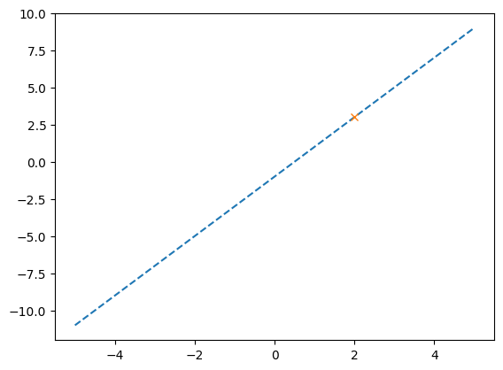
- 예제2: \(f(x)=x^2\) 위의 임의의 점을 입력하면 접선을 리턴하는 함수를 구현하라.
def make_func(x0):
f = lambda x: x**2
def func(x):
h = 0.0001
a = (f(x0+h)-f(x0))/h
return a*(x-x0) + f(x0)
return funcx = np.linspace(-5,5,101)
tan_line = make_func(1.2)
plt.plot(x,x**2,'--')
plt.plot(x,tan_line(x),'--')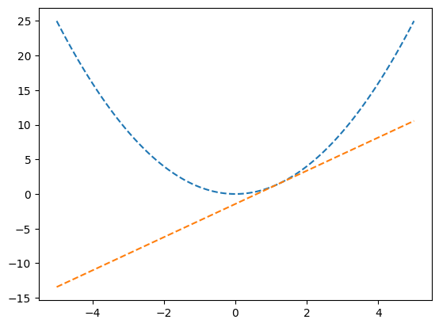